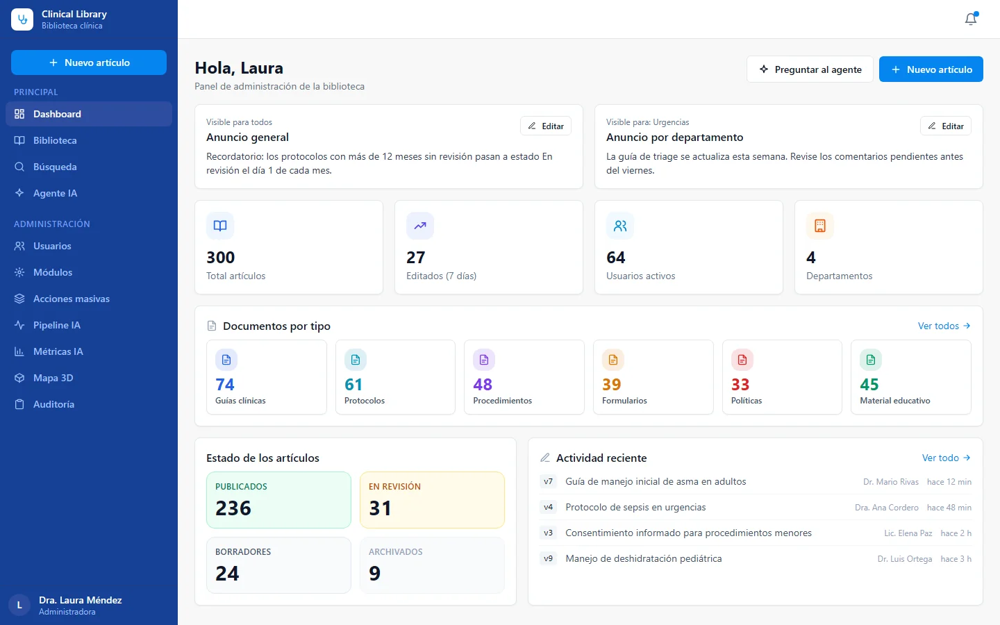
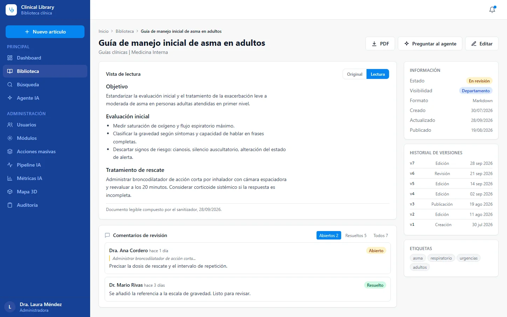
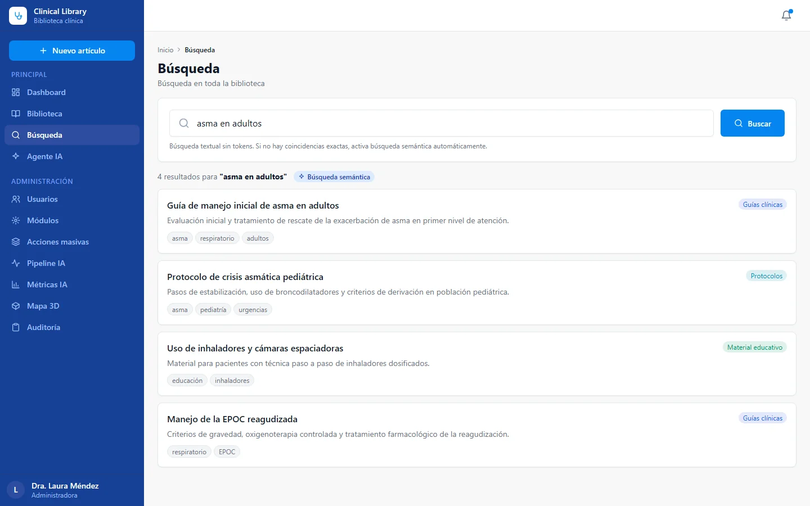

Repositorio de conocimiento clínico
Fuente única de verdad de las guías médicas y de protocolos en un servicio nacional de telemedicina pública, en dos generaciones: una primera versión en Google Apps Script y la versión actual en Google Cloud con respuestas aumentadas por recuperación.
- 200 a 1,000artículos
- 400+médicos usuarios
Versión actual en uso. Cifras reportadas en 2026. Ver las pantallas
Problema
Los médicos necesitan un lugar único y de referencia para cada acción médica y cada protocolo. Sin él, el personal sigue versiones distintas de un procedimiento y el equipo de calidad no tiene cómo hacer cumplir un estándar. En este servicio, no consultar el repositorio se considera un incumplimiento y el equipo de calidad lo señala.
Por eso el repositorio debe estar estandarizado, actualizado, ser fácil de buscar y confiable: un médico que hace una pregunta debe recibir una respuesta que provenga de los artículos aprobados, con su fuente, y no de la memoria ni de la improvisación.
Solución
Versión 1 (Google Apps Script, primera versión). Una aplicación web con un front end de página única en React, Google Sheets como base de datos y Drive para los archivos de origen. Cubría el ciclo editorial completo: publicar y actualizar artículos, revisar con comentarios internos, historial de versiones, taxonomía de tipos y etiquetas, importación masiva desde hojas de cálculo, un tablero y notificaciones por correo y chat. Unas 2,400 líneas de back end en Apps Script.
Versión 2 (actual, Google Cloud). Un back end en NestJS con PostgreSQL y búsqueda vectorial, un front end en React y un asistente aumentado por recuperación.
- Los artículos siguen un flujo editorial (borrador, requiere revisión, publicado, archivado) con versionado automático, comentarios de revisión y slugs inmutables.
- Acceso por rol y por departamento, además de visibilidad por artículo (pública, por departamento, restringida), aplicada de forma consistente a la búsqueda y al asistente.
- Dos rutas separadas: una búsqueda de texto rápida que no consume tokens de IA y un asistente que se invoca de forma explícita. El asistente divide en fragmentos los artículos publicados, recupera los pasajes relevantes y responde a partir de ellos con sus fuentes.
- Un banco de preguntas curado: las respuestas aprobadas por un auditor se almacenan y se reutilizan sin llamar al modelo, de modo que las preguntas comunes son rápidas, deterministas y gratuitas, mientras que las preguntas nuevas las responde el modelo y quedan en cola para revisión.
- Importación masiva desde la versión 1, notificaciones por correo, chat y webhook, y un registro de auditoría.
Por qué la migración: Apps Script llegó a los límites de su plataforma y el servicio quería agregar respuestas aumentadas por recuperación sobre la base de artículos.
Impacto
Las cifras son rangos, a agosto de 2026:
- Artículos: 200 a 1,000.
- Usuarios: todos los médicos del servicio, más de 400.
- Un repositorio compartido reemplaza las guías dispersas, y ahora el cumplimiento puede verificarse contra una sola fuente.
Verificaciones registradas en el repositorio: una batería repetible contra el asistente reportó 18 aprobadas, 1 advertencia y 0 fallos el 2026-07-04, y una auditoría funcional de los módulos reportó 54 de 54 verificaciones aprobadas (docs/verificacion-agente.md).
Mi rol
- Requerimiento y dominio, levantados con los médicos y el equipo de calidad.
- Diseño de pantallas.
- Desarrollo con asistencia de IA, siguiendo planes escritos y registros de decisiones.
- Entrega y documentación de ambas generaciones, incluida la ruta de migración de la versión 1 a la versión 2.
Stack
Versión 1: Google Apps Script (runtime V8), Google Sheets y Drive, React 18 (compilación UMD) en un solo archivo HTML, editor Quill, búsqueda con Fuse.js.
Versión 2, con versiones leídas de los paquetes instalados:
- NestJS 11.1.17, TypeScript 5.9.3, Prisma 5.22.0.
- PostgreSQL 15 con pgvector (imagen de contenedor
pgvector/pgvector:pg15), embeddings almacenados como vectores de 768 dimensiones. - Vertex AI SDK 1.12.0 con Gemini 2.5 Flash (modelo de generación por defecto) y un modelo de embeddings de Gemini.
- React 18.3.1, Vite 6.4.2, Tailwind CSS 3.4.19.
- Jest 29.7.0, Docker, Cloud Run y Cloud SQL como destino de despliegue documentado.
Humano en el circuito en este proyecto
Las rutas de evidencia que aparecen abajo corresponden a repositorios privados y se muestran como texto plano.
- El producto incluye una compuerta humana: un curador o auditor aprueba cada respuesta antes de que se reutilice y puede fusionar formulaciones equivalentes (
docs/plan-l3-l4-qabank-curacion.md,docs/arquitectura-determinismo-rag.md). - Auditoría escrita de la lógica de negocio, con las decisiones del responsable registradas:
docs/auditoria-negocio-2026-06.md. - Verificación repetible del asistente:
docs/verificacion-agente.md,scripts/agent-battery.mjs,scripts/module-audit.mjs. - Decisiones numeradas con sus motivos:
docs/14-decisiones.md. - Procedimiento de migración:
docs/09-import-y-migracion.md; el código fuente retirado de la versión 1 se conserva dentro del repositorio como una carpeta heredada, para consulta. - Índice de documentación para quien se incorpore:
docs/00-indice.md.
Estado
La versión 2 es la versión actual y la usan los médicos del servicio. La versión 1 fue la primera versión y se retiró en favor de la versión 2. No se publican los detalles del despliegue.
Pantallas



La información de estas pantallas ha sido anonimizada.